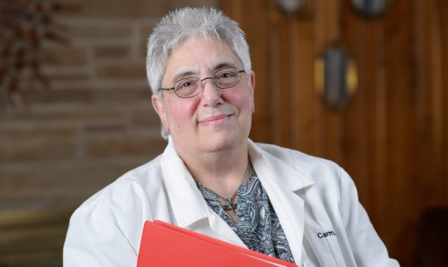

NRG1 Energizers Leadership

Alison Schram, MD
Chair
Dr. Alison Schram is an Assistant Attending Physician in the Early Drug Development (EDD) and Gynecologic Medical Oncology Services at Memorial Sloan Kettering Cancer Center (MSKCC). She serves as Section Head of Oral Therapeutics in the EDD and co-chair of the Institutional Review Board at MSKCC. Dr. Schram is a medical oncologist and clinical investigator with a focus on developing novel, molecularly-targeted therapeutics. She is a recipient of the American Society for Clinical Oncology (ASCO)/Conquer Cancer Foundation Career Development and Young Investigator Awards, and grants from the National Institutes of Health/National Cancer Institute and MSK Society.
Dr. Schram graduated from the University of Pennsylvania School of Medicine in 2012, during which time she did a year of cancer research through the Howard Hughes Medical Fellowship. She subsequently went on to complete internal medicine residency training at Brigham and Women's Hospital in 2015 followed by a fellowship in medical oncology at MSKCC from 2015 to 2018. She joined MSKCC’s faculty in 2018.
Dr. Schram has dedicated her career to the development of novel strategies to fight cancer through the implementation of early-phase clinical trials, with a particular focus on biomarker-driven, tumor agnostic studies. Her translational work focuses on characterizing genomic biomarkers of response and resistance to targeted therapy with the goal of identifying mechanisms to prevent or overcome primary and secondary resistance.

Marcia K. Horn, JD
Director
Marcia K. Horn, JD, is Director of NRG1 Energizers and the president and CEO of ICAN, International Cancer Advocacy Network, https://askican.org, a 501(c)(3) charitable organization focused on direct patient navigation and customized information services for Stage IV cancer patients. ICAN's ethos is unapologetic, creative, and tenacious patient navigation and advocacy, with the mission to extend life with the highest attainable quality of life.
At ICAN, Marcia is a research advocate who has directly navigated many thousands of complex cancer patient cases since the founding of the organization in 1996. She is also a molecular profiling advocate, a clinical trials matching advocate, an expanded access program ("compassionate use") advocate, a public policy advocate, and a health equity advocate.
Since March 2017, Marcia has also served as the Executive Director of the Exon 20 Group/EGFR Exon 20 Warriors and HER2 Warriors (https://exon20group.org) and has built the organization into an international multi-stakeholder coalition and advocacy powerhouse with the mission of transforming cancers caused by EGFR exon 20 insertion and HER2 exon 20 insertion mutations into manageable diseases. The Exon 20 Group, founded by the late Kevin M. Hanlon and Robert T. Hanlon, PhD, provides free direct patient navigation and oncology nursing services and a variety of additional services to EGFR exon 20 and HER2 exon 20 patients and care partners. In late 2023, ICAN assumed the management and direction of both the MET Crusaders (MET exon 14 skipping; MET amplification; MET over-expression pan-tumor), which Marcia chairs, and the Biomarker Collaborative (a pan-tumor, global coalition of biomarker support groups).
Marcia has served as one of two research advocates for both the Stand Up 2 Cancer Molecular Early Detection of Colon Cancer Dream Team and the Stand Up 2 Cancer InTIME Dream Team for Lung Cancer Interception. She served for three years as DIA's inaugural chair of its Patient Engagement Community and remains a PCORI (Patient-Centered Outcomes Research Institute) Ambassador. Marcia has served seven years as a member of the ASCO TAPUR Study Molecular Tumor Board, twelve years as a member of the Banner Health Institutional Review Board, and seven years as the research advocate for the SWOG Early Therapeutics/Rare Cancers Committee. Since 2017, Marcia has enjoyed her role as one of the two research advocates for The University of Texas Southwestern/MD Anderson Cancer Center Lung SPORE (which is part of the National Cancer Institute's Specialized Programs in Research Excellence).
In January 2024, Marcia was selected as the research advocate for the International Association for the Study of Lung Cancer (IASLC) Rare Tumors Committee and is a co-lead for a major project of the Small Cell Lung Cancer Committee. Marcia is proud to represent the Exon 20 Group, MET Crusaders, and NRG1 Energizers as a member of the patient advisory board for 23andMe's transformative Lung Cancer Genetics Study which was launched in July 2024.
Since 2013, Marcia has reviewed clinical trial protocols, informed consent forms, and patient collateral materials for pharmaceutical and biotech companies as well as nonprofit foundations. Receiving shoutouts at cancer conferences for her expertise in and success at clinical trials accrual and retention, Marcia is continually asked to refer patients and care partners for speaking engagements and patient-centered advisory boards.
ICAN has consistently been rated as Top Rated Health Care Nonprofit/Top Rated Cancer Nonprofit since the inception of that award at GreatNonprofits.org. Marcia is currently serving her second term on Charity Navigator's Consultative Council for Nonprofit Leaders. She was a member of GuideStar's advisory board for the planning of GuideStar's rollout of its Platinum rating. She is known for her collaborative spirit and her generosity in mentoring CEOs in other nonprofit organizations since half of her nonprofit career was involved in chairing boards and half has been involved in executive leadership.
Marcia graduated Phi Beta Kappa from Stanford University in Political Science and received her JD from Stanford Law School. Before joining ICAN, she practiced commercial litigation and appellate law in Phoenix and held major leadership roles in the arts and civic organizations in Arizona.
Marcia resides in Phoenix and enjoys ballet and opera. Her son, Yoni Horn, a graduate of Pepperdine Law School, practices corporate law in Santa Monica.

Ashraf Abdelghany, MD
Research Director
Dr. Ashraf Abdelghany serves as the Director of Research at ICAN, International Cancer Advocacy Network, a 501(c)(3) charitable organization dedicated to direct patient navigation and personalized information services for Stage IV cancer patients. In addition to handling major research projects for the Biomarker Collaborative, which is now under the direction of ICAN, Ashraf works with ICAN's various patient organizations--the Exon 20 Group, MET Crusaders, PD-L1 Amplifieds, and NRG1 Energizers, updating members with new drug and clinical trial announcements. He also works with the leadership of ICAN's satellite organizations outside the United States.
In March 2021, Ashraf moved to Barcelona to join SciTech DiploHub as a Research Fellow, a globally recognized think-and-do tank in Science Diplomacy. Backed by leading research centers, universities, nonprofits, startups, corporations, and public institutions, SciTech DiploHub aims to elevate the role of science, technology, and cities in foreign policy.
Previously, Ashraf served as Chairman and Outreach Coordinator at the Egyptian Association of American Medical Training and Research (EAMTAR), where he organized and moderated career advising sessions for Egyptian medical students and graduates pursuing medical residency, fellowships, and research opportunities in the U.S. In January 2014, he initiated a partnership between EAMTAR, EducationUSA, and the U.S. Embassy in Cairo, moderating nearly all “Medical Study in the U.S.” events until March 2016. Recognizing his impactful volunteer work, he was nominated by the U.S. Embassy to participate in the prestigious International Visitor Leadership Program (IVLP) in November 2015.
Ashraf has a profound passion for cancer research and public health. In 2017, he was a research fellow at the Spanish National Cancer Research Center (CNIO) in Madrid. His commitment to advancing personalized medicine and translational research led him back to Spain, where he earned a Master’s degree in Personalized Medicine and Translational Research from the University of Granada in 2024.
His dedication to science and health diplomacy is evident in his participation in the 2017 Health Security Futures Fellowship (HSP) in Valencia and Washington, D.C. As a fellow, he developed a health diplomacy project aimed at raising awareness about global health diplomacy among young scientists and medical professionals in Egypt. He presented his project at AAAS’s Science Diplomacy Conference in Washington, D.C. and at the Science Policy Symposium at Rockefeller University in New York. In June 2018, he was selected by the AAAS Center for Science Diplomacy as one of 28 future science diplomats worldwide, representing Egypt and the Middle East at the Science Diplomacy and Leadership Workshop.
Ashraf obtained his medical degree from Al-Azhar University School of Medicine in Cairo, Egypt. Currently, he resides in Spain, where he manages and leads international research projects with a diverse team of volunteers.
Beyond his professional endeavors, Ashraf enjoys the beach, volleyball, hiking, and traveling across Spain.

Carmi Fazio, RN MSN ONS
Director of Oncology Nursing
Carmi Fazio, RN MSN ONS, is a registered nurse currently living and working in Niles, Illinois. Her areas of expertise are in oncology and end of life nursing. As an RN, she has worked in oncology since 2006. She received her Associate degree in 2005, her Bachelor's degree in 2012 and a Masters in Nursing Education in 2016. She graduated as a member of the prestigious Golden Key International Honor Society.
Carmi has received many accolades for her work in oncology including Cure Magazine's Extraordinary Healer Award in 2016, OptumCare/United Health Group (UHG) Superhero Award in 2018, a 2018 worldwide leader in healthcare from the International Nursing Association, and the Diamond Award for top professional in oncology nursing for outstanding achievements as a nurse and a cancer care specialist in 2018. She has completed interviews for the Oncology Nursing Society on a variety of oncology issues. She has appeared in CURE Magazine and Fra Noi (an Italian publication) for her achievements in oncology nursing. As Chair of the Oncology Nursing Council at ICAN, she co-authored a presentation for the 46th Annual Congress of Oncology in 2021 titled "Improving Patient Understanding of Testing in Precision Medicine with Consistent, Plain Language Testing Terms."
Carmi works with patients at ICAN who seek counseling for symptom management, side effects, and pain management. When she isn't working, Carmi likes to read and spend time with her siblings, mom, dogs, and friends.

Kristen Leniz
Senior Patient Advocate
Kristen Leniz, Senior Patient Advocate at ICAN, is a Board-Certified Health Coach with over 10 years of experience in the health and wellness industry. In addition to her work at ICAN, International Cancer Advocacy Network, and its support groups, she serves as a Behavioral Health Coach at Omada Health where she specializes in behavior change, diabetes prevention and management, hypertension, and nutrition. Kristen holds a Bachelor of Science in Marketing from the University of South Florida. Her advocacy work began in 2018 when her mother, Stella Martinson, was diagnosed with the rare EGFR Exon 20 mutation. In honor of her late mother, Kristen continues to support patients through her involvement with the Exon 20 Group at ICAN. She resides in Lakeland, Florida, with her fiancé Johnny Knotts and daughter Jayde.

Susan Johnson
Senior Patient Advocate
Susan Johnson joined the Exon 20 Group at ICAN after caring for her late husband throughout his cancer journey. Following a 33-year career with the United States Postal Service, Susan now honors her husband’s legacy by supporting others facing similar challenges. As a patient advocate for ICAN's biomarker support groups--the Exon 20 Group, the MET Crusaders, and the NRG1 Energizers, she offers compassionate guidance to individuals and families at every stage of treatment, helping them navigate complex medical systems and connect with essential resources. Susan lives in Orange County, California, and cherishes time with her grandchildren. For her, everyday is a gift and one that should be celebrated and shared with those they love. Finding Joy in all things is a task that she takes seriously.
Genessa Kahn
Patient Advocate
Genessa Kahn is a pre-medical undergraduate student majoring in biology and business at the Macaulay Honors College at CUNY, Hunter College, New York. Genessa began working with ICAN in 2020 while in high school. Her first ICAN project was to create a comprehensive online resource/portal for patients with the childhood cancer, Diffuse Intrinsic Pontine Glioma (DIPG), and their families. Genessa was accepted into a clinical oncology research program at Memorial Sloan Kettering Cancer Center in 2024, under the mentorship of Dr. Alison Schram. She has been evaluating the clinicopathologic characteristics of NRG1 fusion positive patients. Genessa was invited to give an oral presentation of this work at the 2024 ABRCMS Annual Conference in Pittsburgh, Pa. Genessa is currently performing basic research on the potential of combination therapies targeting mutant p53 gain-of-function activity in Triple Negative Breast Cancer models in the Bargonetti Laboratory at Hunter College. On the financial side, Genessa is a Scholar in the “Girls Who Invest” program. Genessa has long been involved in creating and participating in community service programs, for which she has received multiple Presidential awards, and working together with multiple stakeholders.